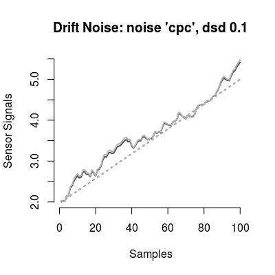
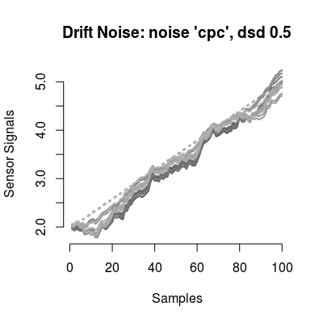
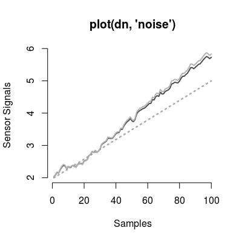
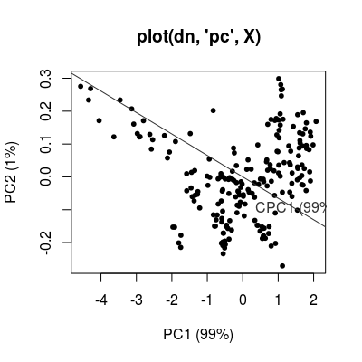
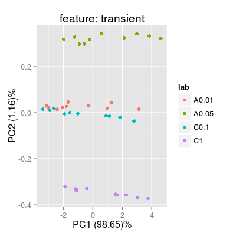
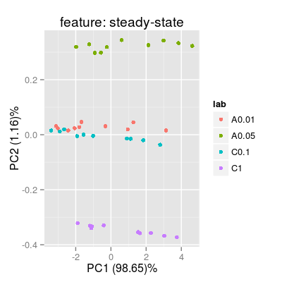
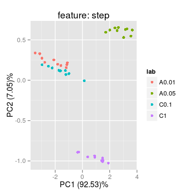

DriftModelNames() defaultParDriftNoiseModel() DriftNoiseModel(...)
Character vector of model names.
List of the default parameters.
Method ndcomp.
Method ndvar.
Method dspace.
Class DriftNoiseModel generates the drift noise in
a multi-variate manner in several steps.
Function to get model names of class
DriftNoiseModel.
Function to get default constructor parameters of class
DriftNoiseModel.
Constructor method of DriftNoiseModel Class.
Wrapper function DriftNoiseModel.
The primary question arising in drift modeling is related
to the way of one defines the drift phenomena for gas
sensor arrays. We propose to evaluate a drift subspace
via common principal component analysis. The hypothesis
of common principal component analysis states that exists
an orthogonal matrix V such that the covariance
matrices of K groups have the diagonal form
simultaneously. The resulted eigenvectors (columns of the
matrix V) define the subspace common for the
groups and orthogonal across the components.
A preliminary step involves quantification of
drift-related data presented in the long-term UNIMAN
dataset. These results are stored in
UNIMANdnoise dataset.
On the next step the drift is injected in the sensor
array data by generating the noise by multi-dimensional
random walk based on the multivariate normal distribution
with zero-mean and diagonal covariance matrix - in the
sub-space defined by the matrix V. The relative
proportion along the diagonal elements in the covariance
matrix is specified by the importance of drift components
in terms of of projected variance.
On the final step the component correction operation is recalled to induce the generated noise from the random walk back into the complete multivariate space of the sensor array data.
Slots of the class:
num |
Sensor
number (1:17), which drift profile is used. The
default value is c(1, 2). |
dsd |
Parameter of standard deviation used to generate the drift noise. The deault value is 0.1. |
ndcomp
|
The number of components spanning the drift sub-space. The default number is 2. |
ndvar |
The importance values of drift components. The default
values are UNIMANdnoise dataset. |
driftModel |
Drift model of class
DriftCommonModel. |
predict |
Generates multi-variate noise injeted to an input sensor array data. |
dsd |
Gets the noise level. |
dsd<-
|
Sets the noise level. |
The plot method has three types (parameter
y):
noise |
(default) Depicts the drift noise generated by the model with a linechart. |
pc |
Shows the drift components
in a PCA scoreplot of an input sensor array data
(parameter X. |
In the case num is different from value
c(1:17), the number of components is not the same
as in V matrix. First, the colums in V
matrix are selected according to numbers pointed in
num. Second, QR-decomposition of the resulted
matrix is performed to orthogonolize the component
vectors.
# model: default initialization dn <- DriftNoiseModel() # get information about the model show(dn)Drift Noise Model (dsd 0.1), common model 'cpc'print(dn)Drift Noise Model - num 1, 2 drift common model - method: cpc - ndcomp: 1plot(dn)
# model: custom parameters # - many sensors dn <- DriftNoiseModel(dsd=0.5, ndcomp=3, num=1:17) print(dn)Drift Noise Model - num 1, 2, 3 ... 17 drift common model - method: cpc - ndcomp: 3plot(dn)
# method plot # - plot types 'y': barplot, noise, walk dn <- DriftNoiseModel() # default model plot(dn, "noise", main="plot(dn, 'noise')")
# default plot type, i.e. 'plot(dn)' does the same plotting data(UNIMANshort) X <- UNIMANshort$dat[, num(dn)] plot(dn, "pc", X, main="plot(dn, 'pc', X)")
### example with a SensorArray set.seed(1) sa <- SensorArray(num = 1:5) set <- c("A 0.01", "A 0.05", "C 0.1", "C 1") sc <- Scenario(rep(set, 10)) conc <- getConc(sc) sdata <- predict(sa, conc) p1 <- plotPCA(sa, conc = conc, sdata = sdata, air = FALSE, main = "feature: transient") p1
p2 <- plotPCA(sa, conc = conc, sdata = sdata, feature = "ss", main = "feature: steady-state") p2
p3 <- plotPCA(sa, conc = conc, sdata = sdata, feature = "step", main = "feature: step") p3